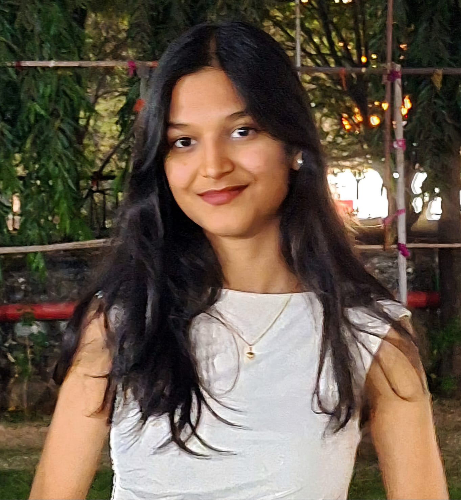

Mansi Jadhav

Summary
I am a proactive and detail-oriented Computer Engineering student with experience in full-stack web development. I enjoy collaborating on projects and constantly improving my technical skills.
Education
- Datta Meghe College of Engineering, Computer Engineering
Airoli, Navi Mumbai
2024 - Present | CGPA - 8.17
- Sanjivani Junior College, HSC
Kharghar, Navi Mumbai
2020 - 2022 | 80%
- Sanjivani International School,ICSE
Kharghar, Navi Mumbai
2011 - 2020 | 82%
Experience
- Javascript MERN Full Stack Intern @ Mernix Consulting, Thane (Jul 2024 - Aug 2024)
-
Built a Currency Converter (INR to SGD) using React, Axios, and Firebase Hosting.
-
Improved UI/UX of web apps through team collaboration.
-
Python Intern @ Mira Advanced, Thane (Jan 2024 - Feb 2024)
-
Developed a web-based Employee Management System using Python and MySQL.
-
Added features for onboarding, role management, and performance tracking.
-
Ensured data security and integrity with robust backend architecture.
Skills
Technical Skills
-
Programming Languages:Javascript MERN, Python
-
Database Management: MongoDB, MySQL
-
Tools: Github, Firebase, Render, MongoDB Atlas
Soft Skills
- Problem-solving
- Team Collaboration
- Communication
- Time Management
Certifications
- Javascript MERN Full Stack | Kamal Classes, July 2024
- Python with Data Structures, Data Bases and Data Science | Kamal Classes, Dec 2023
- MySQL : SQL, PL/SQL & DBA Programming | Kamal Classes, Dec 2023
Other